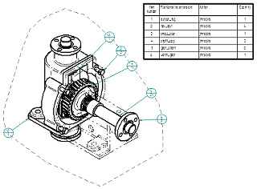

Parts List command
The Parts List command  retrieves information from the file properties of the referenced part or assembly
documents, and displays it in a parts list on your drawing. Detailed formatting options
enable you to create a highly customized parts list.
retrieves information from the file properties of the referenced part or assembly
documents, and displays it in a parts list on your drawing. Detailed formatting options
enable you to create a highly customized parts list.
If you want to create a parts list for a Family of Assemblies (FOA) source assembly
document or FOA member document, use the Family of Assemblies Parts List command  , which is adjacent to the Parts List command on the command ribbon.
, which is adjacent to the Parts List command on the command ribbon.
-
You can use the Auto-Balloon option on the Parts List command bar to automatically add balloons to the individual parts in part views. For more information, see Create a parts list.
-
For pipes and frame members, you can generate a total length list or a cut length list. For more information, see Create a total length parts list.
-
You can generate a flat length parts list for adjustable tubes and hoses. For more information, see Create a parts list for flexible hoses and tubing.
Note:Adjustable tubes and hoses are routed along different paths in the top-level assembly, but use the same tube properties as their rigid counterparts.
-
You can create an exploded parts list using the options on the List Control tab. For more information, see Create an exploded parts list.
-
You can stack fastener system balloons automatically using the Fastener System options on the Balloon page (Parts List Properties dialog box). For more information, see Stack balloons.

How do I
Create a parts listCreate a subassembly parts list
Create an exploded parts list
Create a total length parts list
Create a parts list for flexible hoses and tubing
Create a family of assemblies parts list
Exclude parts from an exploded parts list
Open a model from a parts list
Example: Show custom occurrence properties in a parts list
Example: Show custom properties and materials in a parts list
Example: Show sheet metal material thickness in a parts list
Renumber a parts list
Change the active parts list
Display assembly occurrences in a drawing view or parts list
Convert a parts list to a table
Copy a parts list to the clipboard
Learn more
Parts listsFamily of Assemblies (FOA) parts lists
Assembly part views and parts lists
Subassembly drawing views and parts lists
Exploded parts lists
Custom occurrence properties in parts lists
Occurrence quantity overrides in parts lists
Item numbers in parts lists
Saving and reusing the parts list format
Look up more details
Parts List command barParts List Properties dialog box
Copy Contents command
Convert To Table command